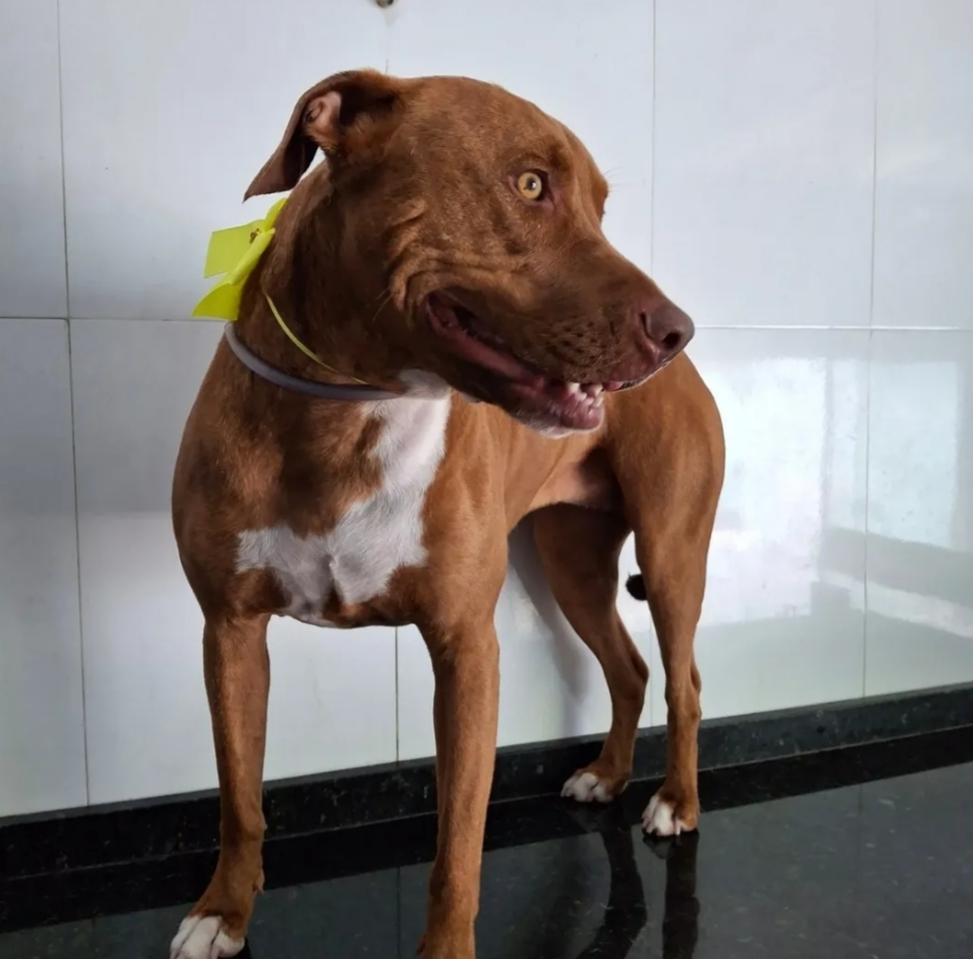
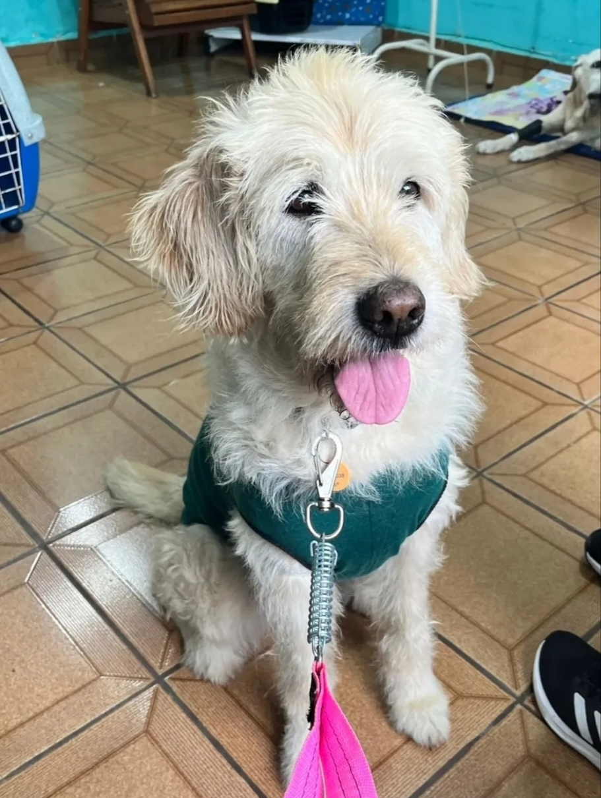
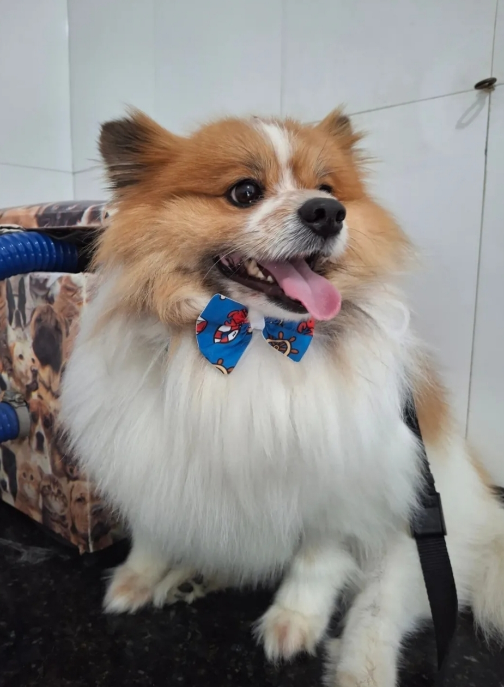
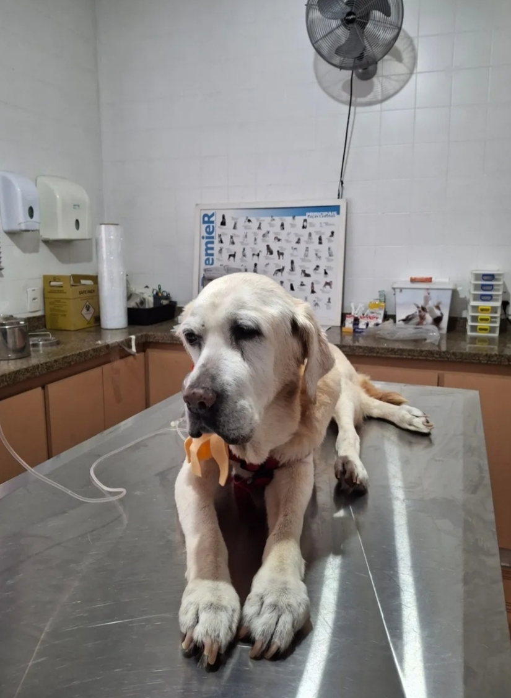
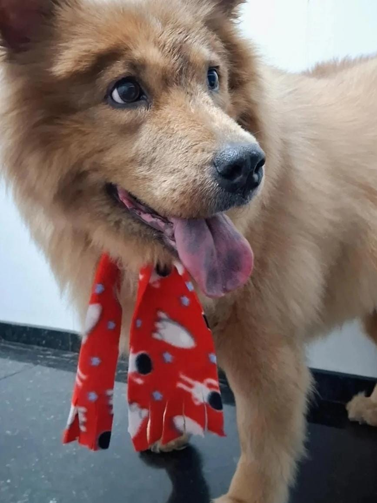

Galeria de Fotos e Depoimentos
Confira alguns dos pets que já passaram por aqui e o que nossos clientes dizem sobre o nosso atendimento
Conheça a Clínica em Vídeo
Assista a um vídeo curto sobre a estrutura e o dia a dia da Clínica Veterinária Mundo Pet.
Nossos Clientes





Depoimentos de Clientes
Mariana Souza
Atendimento excelente! Levei meu cachorro para uma consulta domiciliar e fui muito bem atendida, com toda atenção e cuidado. Recomendo demais a Clínica Mundo Pet.
Carlos Eduardo
Minha gata fez a castração na clínica e todo o processo foi tranquilo, desde a consulta até a recuperação. Equipe muito atenciosa e profissional.
Fernanda Lima
O atendimento domiciliar foi essencial para o meu cachorro idoso, que não se adapta bem a deslocamentos. A veterinária foi muito cuidadosa e explicou tudo com clareza.
Roberto Alves
Uso os serviços da clínica há anos, desde consultas de rotina até exames mais complexos. Sempre fui muito bem atendido e recomendo a todos que têm pets.